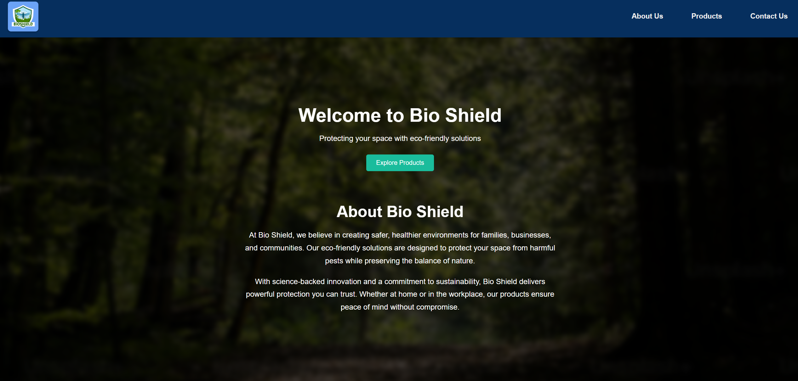
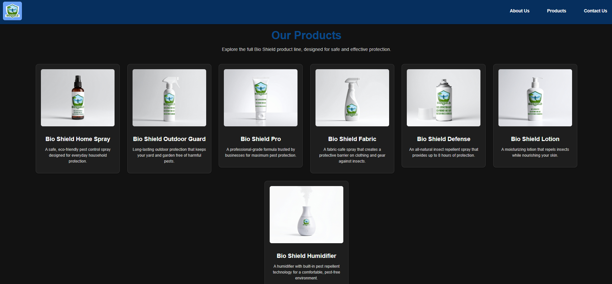

First understanding of how to develop a marketing website. This was a process of finding ideas and inspiration from other companies with successful products, the graphic lookout that attracts customers, and using AI generated background for this fake advertisement.In this project, I conducted market research on other brands such as OFF! And Ben’s to see what products and brands should be considered market success. My skills in this project were using all the graphics, such as the products that are displayed. My other focus was creating a prompt or an introduction about our BioShield website. This project did include AI’s help, so I utilized it to help me with generating images and logos. All the work I’ve done onto the website was all assisted with AI– the logos, products, and about me page. Through this experience I learned how to photoshop for creating the logos, and another skill I learned was understanding how adobe works and how the mechanics are functioned. This project was built with me and my partner, and our project went pretty well finding a good theme and figuring out the layout for the website. We both agreed on what colors to use, what kind of products we wanted to display, and what other unique functions we wanted to add.

During this time I’ve come to notice how inexperienced I was with HTML and CSS, which limited my coding experience. Since I wasn't confident with HTML and CSS, I initially struggled with contributing to the technical side of the project. A way to overcome this was shifting my focus on the “graphic” side rather than the coding side. I was mostly managing the logo and product designs. This allowed me to contribute meaningfully to the project while still supporting my partner’s developed work.
This project taught me the importance of strengthening my skills while still learning from areas where I felt I was less experienced. If I were to redo this project, I would spend more time strengthening my coding skills so I could contribute more evenly to both designs and development.